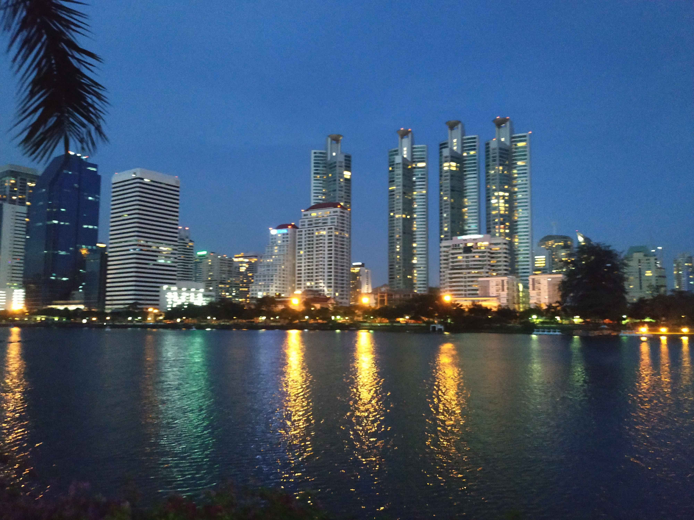

สวนเบญจกิติ
วันกับเดือนที่ไม่ทราบ แต่ถ่ายช่วงปิดเทอมก่อนขึ้น ม.4 ปี 2561
ช่วงนั้นเป็นช่วงที่ไปวิ่งที่สวนเบญจกิติทุกวันจันทร์-ศุกร์
เพื่อเตรียมร่างกายให้พร้อมสำหรับไปทดสอบคัดเลือกเรียนรด.
โดยจะไปวิ่งประมาณ 4-5 โมงเย็น วิ่งประมาณชั่วโมงนึงแล้วค่อยกลับ
แต่วันที่ถ่ายรูปนี้ไปค่อนข้างช้า เลยกลับบ้านเย็น แล้วระหว่างที่วิ่งเสร็จแล้วกำลังจะกลับบ้าน
หันไปเห็นวิวค่อนข้างสวย เลยได้รูปนี้มา
(ผลจากการฝึกวิ่งนั้นก็ออกมาได้ดี ผมผ่านการทดสอบวิ่งและการทดสอบอื่นๆ ทำให้ได้เรียนรด. 3 ปี ในช่วง ม.4-ม.6)
